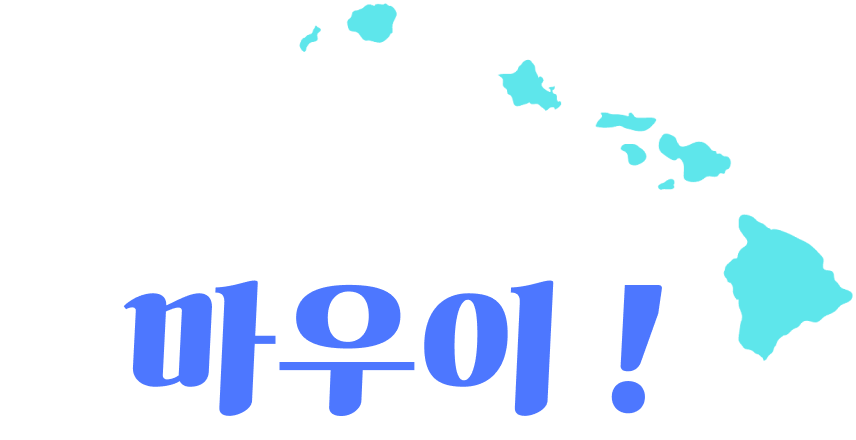
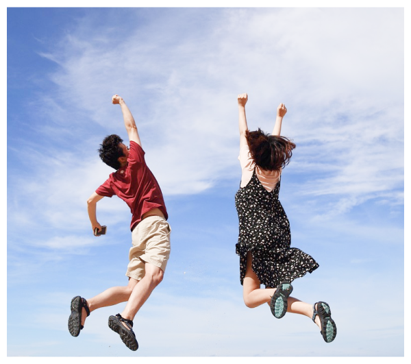
연휴에 여행가고싶으신 분들
자연을 좋아하시는 분들
관광지 코스 고민하기 싫으신 분들
해양 스포츠를 좋아하시는 분들
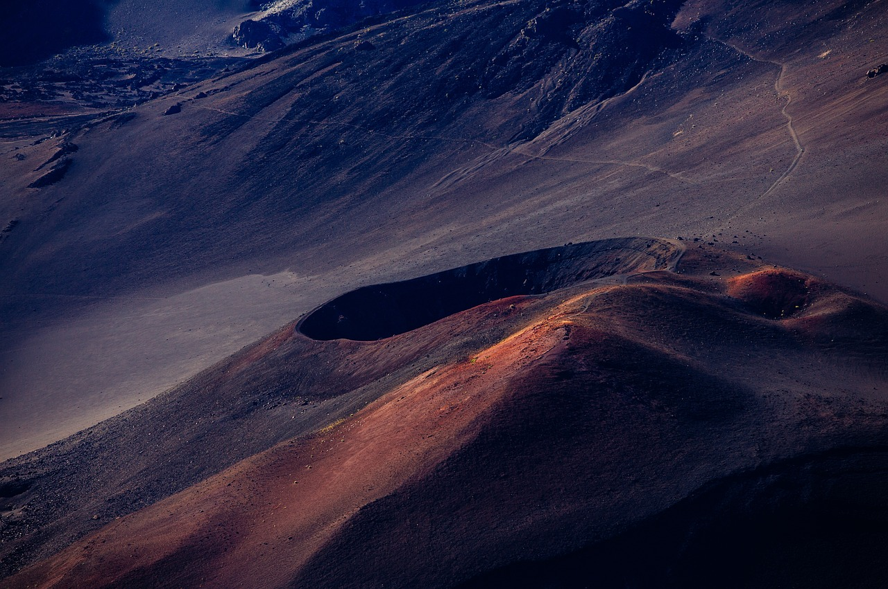
마우이섬의 중심에 위치한
이 화산은 세계에서 가장 큰 허브 산,
일출이 아름다운 장소로 유명합니다.
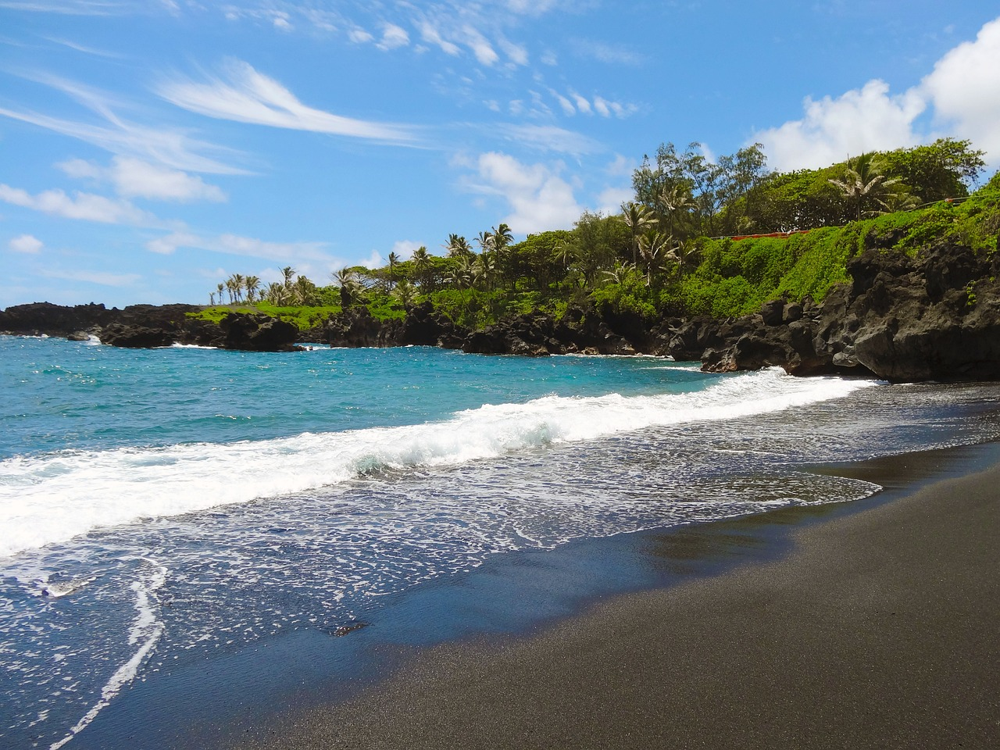
하와이 주에서 넷째로 큰 섬입니다. 골프
코스가 있으며, 산책, 스노클링, 다이빙
등 다양한 활동을 즐길 수 있습니다.
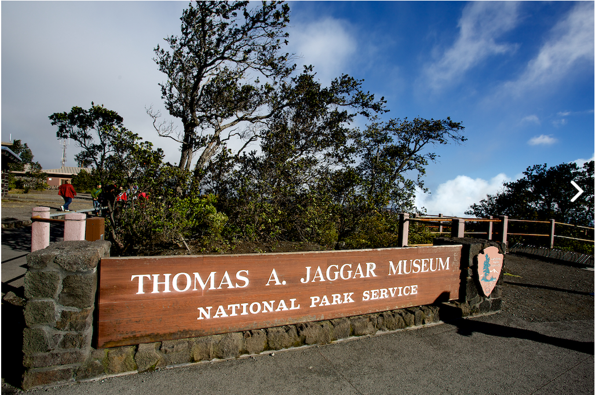
마우이 섬의 동쪽 부근에 위치하고 있으
며, 하와이의 화산 활동으로 형성된 큰
분화구로, 하이파칼라이 신화와 깊은 문
화적 중요성을 지니고 있습니다.
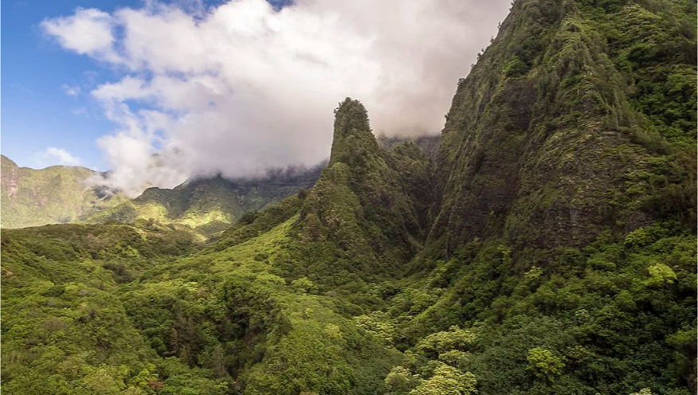
마우이섬의 중앙에 위치한 이곳은 아름
다운 계곡과 대나무 숲, 화려한 폭포로
유명합니다.
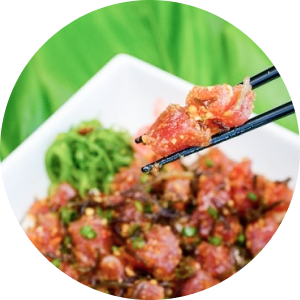
포케는 신선한 회 (일반적으로 생선)를 썬 후 간장, 참기름, 라임 주스, 양
파, 고춧가루 등과 함께 섞어 만든 전통적인 하와이 요리입니다. 마우이
섬에서는 다양한 종류의 포케를 즐길 수 있으며, 신선한 해산물과 다양한
양념이 특징입니다.
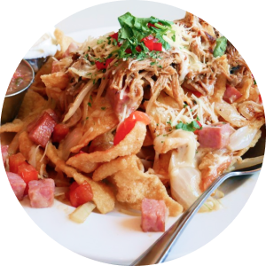
칼루아 포크는 전통적인 하와이안 오븐 인형에서 느리게 구운 포크입니
다. 고기는 소금으로 간하고, 바나나 잎으로 감싼 후 오븐 인형에서 오랜
시간 동안 구워집니다. 결과물은 부드럽고 풍부한 풍미를 가지며, 주로
쌀과 함께 곁들여 즐깁니다.
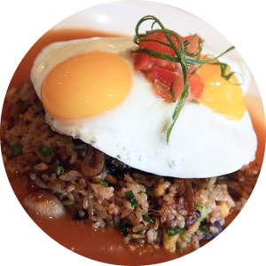
로코 모코는 하와이의 대표적인 현지 음식 중 하나로, 햄버거 패티 위에
구운 계란, 브라운 그레이비 소스를 얹은 요리입니다. 보통 밥 위에 햄버
거 패티와 계란을 얹어 그레이비 소스를 뿌린 후 즐기는데, 이렇게 뭉쳐
진 조합은 식욕을 자극합니다.
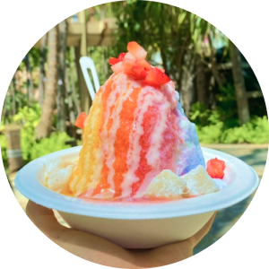
마우이 섬에서 가장 인기 있는 간식 중 하나인 하와이안 셰이브드 아이스는 얇고 부드러운 얼음 위에 다양한 시럽과 토핑을 올린 것입니다.
다양한 맛과 향을 선택하여 개성적인 셰이브드 아이스를 즐길 수 있으며, 과일, 콘덴스 밀크, 아이스크림 등을 추가로 올릴 수도 있습니다.
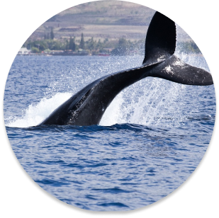
마우이섬은 세계적으로 유명한 고래 관측 장소 중 하나입니다.
이 투어는 보트나 카약을 이용하여 고래들이 자주 출 몰하는 해상 지역으로 이동하여
고래를 관찰할 수 있습니다.
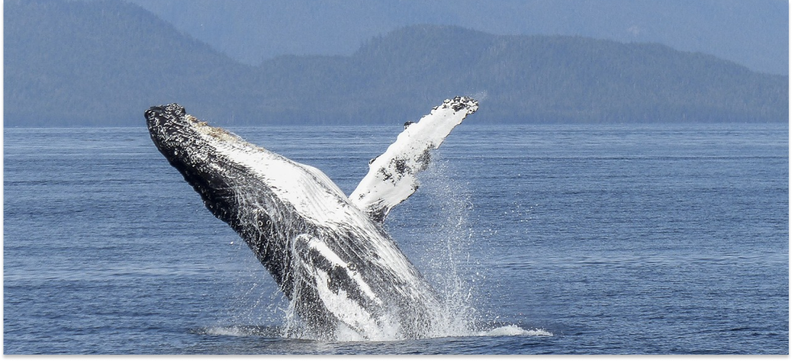
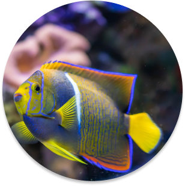
마우이섬 주변에는 아름다운 산호초와 다양한 해양 생물들이 존재합니다.
많은 해변에서 스노쿨링을 즐길 수 있으며,
몰로카이, 라하이나, 멘피스 브라우 카이 등은 특히 인기 있는 장소입니다.
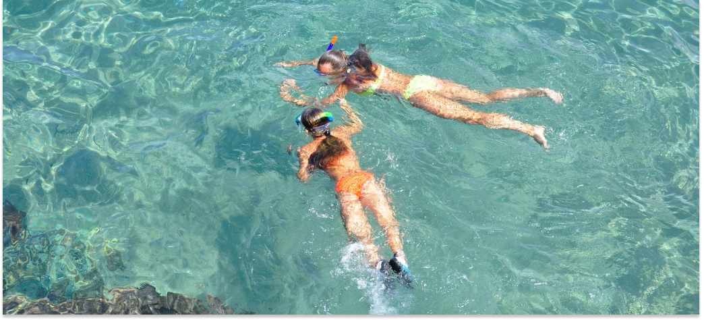
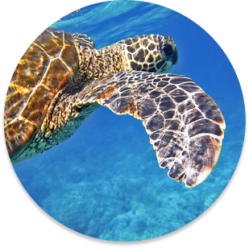
다이빙을 좋아하는 사람들에게도 마우이섬은 매력적인 목적지입니다.
다이빙 스팟은 해양 생물 다양성과 아름다운 산호초와 바다거북이가 유명하며,
모두에게 적합한 다이빙 포인트를 찾을 수 있습니다.
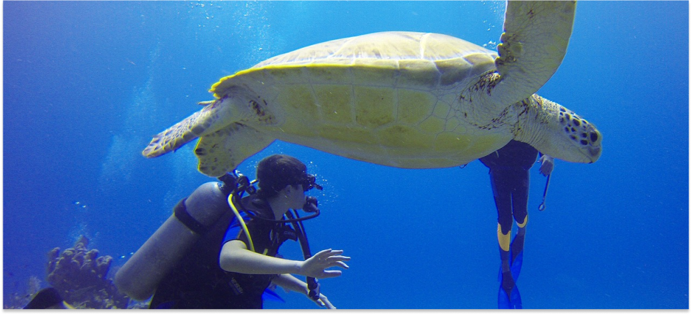
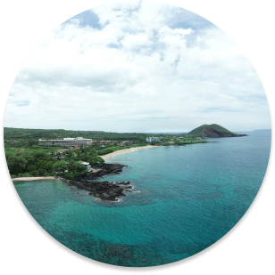
마우이섬은 세계적으로 유명한 서핑 장소로, 다양한 파도 조건을 제공합니다.
호노룰루 베이, 호크스빌, 파이페라인 등 다양한 서핑 포인트에서 서핑을 즐길 수 있습니다.
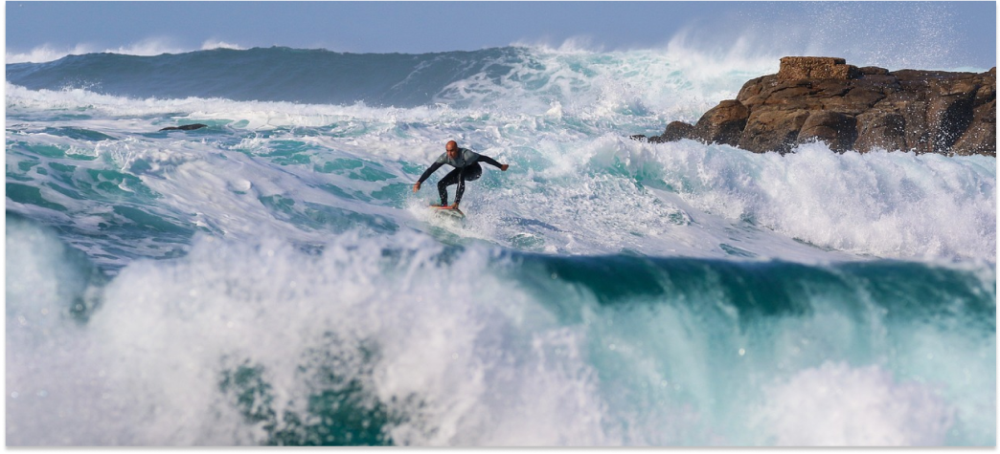
퀴즈도 풀고 자동 응모하자!
이벤트 기간 : 2023년 7월 1일부터 2023년 7월 31일까지
이벤트 대상 : 이벤트에 참여하고자 하는 모든 분들
* 당첨자에게는 이메일로 개별 안내가 이루어집니다.